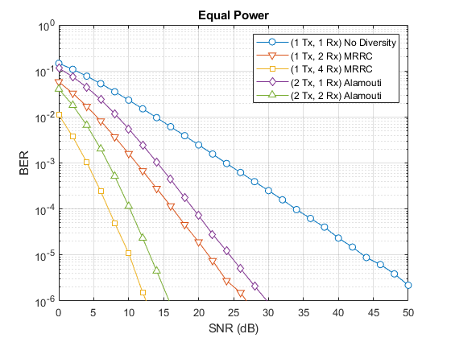

clear; clc; close all;
iters = 5e2;
syms = 5e4;
SNRdB1_1 = 0:2:50;
SNRdB1_2 = 0:2:30;
SNRdB1_4 = 0:2:16;
SNRdB2_1 = 0:2:32;
SNRdB2_2 = 0:2:16;
mrrcBER1_1 = berRayleighMRRC(1,SNRdB1_1,iters,syms);
mrrcBER1_2 = berRayleighMRRC(2,SNRdB1_2,iters,syms);
mrrcBER1_4 = berRayleighMRRC(4,SNRdB1_4,iters,syms);
alamBER2_1 = berRayleighAlamouti(1,SNRdB2_1,iters,syms,'sum1');
alamBER2_2 = berRayleighAlamouti(2,SNRdB2_2,iters,syms,'sum1');
figure
semilogy(SNRdB1_1,mrrcBER1_1,'-o','MarkerFaceColor',ones(3,1));
hold on;
semilogy(SNRdB1_2,mrrcBER1_2,'-v','MarkerFaceColor',ones(3,1));
semilogy(SNRdB1_4,mrrcBER1_4,'-s','MarkerFaceColor',ones(3,1));
semilogy(SNRdB2_1,alamBER2_1,'-d','MarkerFaceColor',ones(3,1));
semilogy(SNRdB2_2,alamBER2_2,'-^','MarkerFaceColor',ones(3,1));
legend('(1 Tx, 1 Rx) No Diversity','(1 Tx, 2 Rx) MRRC',...
'(1 Tx, 4 Rx) MRRC','(2 Tx, 1 Rx) Alamouti','(2 Tx, 2 Rx) Alamouti')
title('Equal Power')
xlabel('SNR (dB)')
ylabel('BER')
grid on
ylim([1e-6,1])
xlim([0,50])
